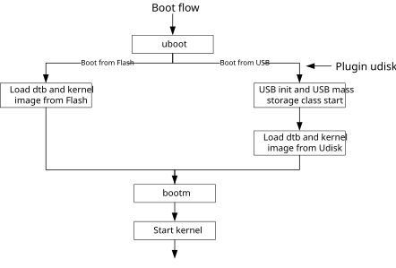
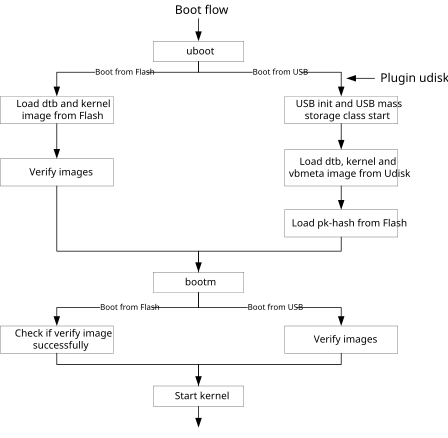

Overview
Generally, images are stored in flash and then loaded to RAM to boot system, which is called boot from flash. USB boot allows system boot from USB, which means images are stored in and loaded from USB device, such as a U-disk.
Architecture
USB boot can be implemented in the U-Boot phase. Figure below shows the flow to boot from flash and USB. The system is booting from flash by default. To implement USB boot, it is necessary to enable USB function and USB mass storage class in the U-Boot phase to make system recognize USB device. Then using fat command to load images to RAM. Finally, executing bootm command to boot kernel.
{kind=link}

USB boot with secure boot disabled
There are additional steps when enabling secure boot because images in USB device also need to be verified. For USB boot, images are verified in the phase of bootm. bootm command will return fail If verify fail and system will not start kernel. Please refer to secure boot chapter to get more information about secure boot.
{kind=link}

USB boot with secure boot enabled
Note
User should input any content in time when booting system to enter U-Boot command line mode, or system will boot from flash.
USB device must be plugged in board before USB initialization because the USB driver in U-Boot uses polling mode to recognize USB device.
Configuration
To enable USB boot, the following configuration should be enabled for U-Boot. In SDK, these configurations are enabled as default.
CONFIG_PHY=y
CONFIG_PHY_RTK_USB=y
CONFIG_USB_STORAGE=y
CONFIG_USB=y
CONFIG_USB_DWC2=y
CONFIG_USB_DWC2_BUFFER_SIZE=64
CONFIG_USB_HOST=y
CONFIG_DM_USB=y
CONFIG_BOOTDELAY=3
CONFIG_FS_FAT=y
CONFIG_FS_FAT_MAX_CLUSTSIZE=65536
CONFIG_CMDLINE=y
CONFIG_CMD_USB=y
CONFIG_CMD_FAT=y
Usage
USB Boot with Secure Boot Disabled
Put
dtb.imgandkernel.imgin the root directory of U-disk. The U-disk should be fat32 format.Input any content in time when booting system to enter U-Boot command line mode.
Plug in U-disk.
Input command
usb start. U-disk will be recognized with the following log:=> usb start starting USB... Bus usb@40080000: USB DWC2 scanning bus usb@40080000 for devices... 2 USB Device(s) found scanning usb for storage devices... 1 Storage Device(s) found
Input command
fatload usb 0 0x60370000 dtb.imgandfatload usb 0 0x60380000 kernel.imgto load images from U-disk to RAM.=> fatload usb 0 0x60370000 dtb.img 19423 bytes read in 17 ms (1.1 MiB/s) => => fatload usb 0 0x60380000 kernel.img 3294376 bytes read in 253 ms (12.4 MiB/s)
Input command
usb stopto deinit USB function to prevent kernel’s USB function from being affected.Input command
bootm 0x60380000 - 0x60370000to boot kernel.
USB Boot with Secure Boot Enabled
Please refer to secure boot chapter to enable and configure secure boot first.
Put secure
dtb.img,kernel.imgandvbmeta.imgin the root directory of U-disk. The U-disk should be fat32 format.Plug in U-disk.
Input command
usb start. U-disk will be recognized with the following log:=> usb start starting USB... Bus usb@40080000: USB DWC2 scanning bus usb@40080000 for devices... 2 USB Device(s) found scanning usb for storage devices... 1 Storage Device(s) found
Input command
fatload usb 0 0x60370000 dtb.img,fatload usb 0 0x60380000 kernel.imgandfatload usb 0 0x60d80000 vbmeta.imgto load images from U-disk to RAM.=> fatload usb 0 0x60380000 kernel.img 3357648 bytes read in 259 ms (12.4 MiB/s) => => fatload usb 0 0x60370000 dtb.img 19549 bytes read in 16 ms (1.2 MiB/s) => => fatload usb 0 0x60d80000 vbmeta.img 5632 bytes read in 14 ms (392.6 KiB/s)
Input command
mtd read pk-hash 0x60e80000 0x0 0x1000to load pk-hash from flash to RAM.=> mtd read pk-hash 0x60e80000 0x0 0x1000 SPIC mode 0x2000 mtd: partition "pk-hash" doesn't end on an erase block -- force read-only Reading 4096 byte(s) (2 page(s)) at offset 0x00000000
Input command
usb stopto deinit USB function to prevent kernel’s USB function from being affected.Input command
bootm verify 0x60380000 0x60370000 0x60d80000 0x40000 0x60e80000 0x1000 0x60380000 - 0x60370000to verify and load images from U-disk to RAM. If success, console will show the following log:Public Key Hash Verified Success! VbMeta Signature Verified Success! Kernel Image verified success! DTB/FDT Image verified success.
If fail, console will show the following log:
Bootm fail! Please verify images correctly.
Note
Since secure boot is implemented by several images together, user should guarantee that when compile the images dtb.img, kernel.img and vbmeta.img, which will be put into U-disk, the images km4_boot_all_en.bin, km0_km4_app_en.bin and rootfs_ubi.img should not be modified.